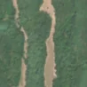
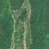

14,4 ha de pădure schimbată lângă Dealu Pădurii
Între vara lui 2025 și 24 aprilie 2026, pe aproximativ 14,4 ha de pădure din comuna Morărești, lângă Dealu Pădurii, județul Argeș, imaginile Sentinel-2 arată că vegetația a dispărut sau s-a schimbat puternic. În registrul public există o autorizație de tăiere pentru acest loc.
Autorizația de tăiere
cu autorizație
Parcela autorizată acoperă zona, iar autorizația era valabilă când s-a tăiat.


Înainte și după: Copernicus Sentinel-2, 10 m pe pixel, conturul zonei cu portocaliu. Poza detaliată (Esri World Imagery) e de acum 1–4 ani: arată ce era acolo înainte, nu tăierea.
Pe scurt
- Identificator
- 20260424_44952_24570
- Locul
- Dealu Pădurii, comuna Morărești, județul Argeș (SIRUTA 17423)
- Coordonate (centru)
- 44.95157, 24.57046 · Google Maps · OpenStreetMap
- Suprafața
- 14,4 ha (din pixeli de 10 m; ± câțiva pixeli pe margine)
- Pădurea întreagă
- în vara lui 2025 (de atunci, nori sau iarnă)
- Prima imagine cu schimbarea
- 24 aprilie 2026
- Imagini în care se vede schimbarea
- 4
- Cât de sigur e semnalul din satelit
- scăzută
- Autorizația cea mai apropiată
- APV 2400178810610 · Ocolul Silvic Cotmeana, valabilă 17 martie 2025 – 31 decembrie 2025, la 0 m de zonă
- Terenul
- pădure de stat, după amenajamentul silvic publicat
- Pădure pierdută în jur, alți ani
- 2007, 2009, 2013, 2018 (Hansen)
- Garda Forestieră
- Ploiești
Dacă vrei să verifici sau să sesizezi
- Pădurile din județul Argeș sunt în grija Gărzii Forestiere Ploiești, care controlează tăierile și dă amenzile.
- Autorizația găsită în zonă e emisă de Ocolul Silvic Cotmeana.
- Formularul Gărzii Forestiere Naționale primește sesizări și fără nume. Trimite linkul acestei pagini, coordonatele și pozele. Dacă tăierea e în desfășurare, sună la 112.
- Autorizațiile și transporturile de lemn se pot căuta în Inspectorul Pădurii.
Pagina arată ce se vede din satelit și ce scrie în registrul public; nu e o dovadă în sine.
Cum citezi zona
Linkul acestei pagini nu se schimbă. Dacă zona iese vreodată de pe hartă, pagina rămâne, cu data și cu ce știam despre ea.
Pădurea RO, zona 20260424_44952_24570: 14,4 ha, Dealu Pădurii, comuna Morărești, județul Argeș; schimbare văzută din satelit între vara lui 2025 și 24 aprilie 2026. https://iliemihai.github.io/padurea-ro/zona/20260424_44952_24570/ (consultat la [data]). Date: CC BY 4.0.
Datele zonei: GeoJSON · toate zonele: date deschise · licența CC BY 4.0.
Istoricul zonei pe hartă
Starea se poate schimba când registrul publică o autorizație sau când analistul vede poze mai bune. O ținem aici, ca un link citat să arate și ce spuneam atunci.
Pe hartă cel târziu din 5 noiembrie 2026.
- 5 noiembrie 2026 – azi · cu autorizație
Detalii tehnice, pentru verificare
De ce acest nivel de încredere:
- văzută schimbată în 4 imagini diferite
- peste 3 ha
- ultima dată am văzut-o intactă în vara lui 2025 (de atunci, nori sau zăpadă)
- fără părerea AI
- Placa Sentinel-2
- 35TLK
- NDVI de referință
- 0.85
- NBR de referință
- 0.61
- Scăderea în pădurea din jur
- 0.12
- Persistență
- 0.96
- NDVI / NBR după
- 0.402 / 0.11
Cum se calculează fiecare: metodologia.
Pune harta zonei într-un articol
Copiază codul în articol (merge în majoritatea site-urilor de știri). Sau pune doar linkul: WhatsApp, Facebook și X arată singure poza zonei.